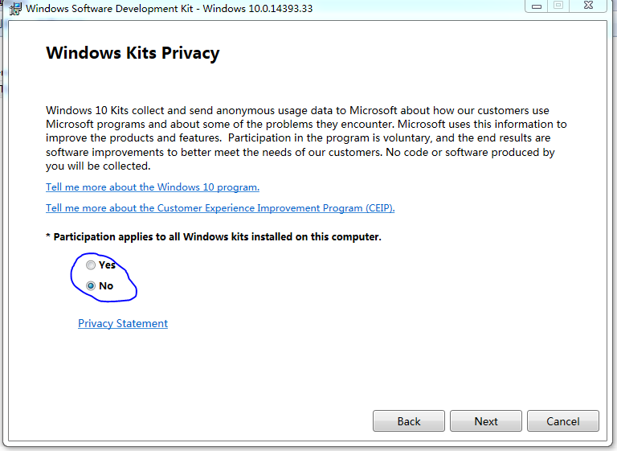
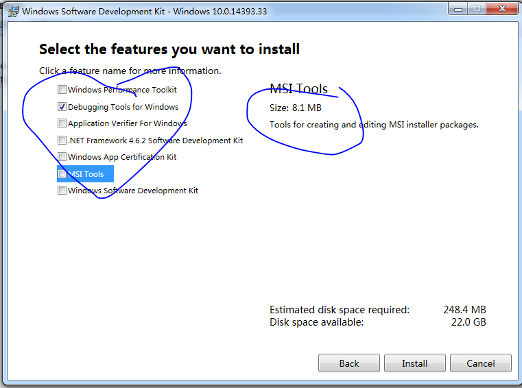

qt
Qt 跨平台 c++ 框架 廣泛用在 gui開發中 Qt 提供了多種許可協議 LGPL GPL 商業授權 Qt 同時提供了 多種 語言綁定 Java C# Lua Python ... 官網 https://www.qt.io/
環境配置 win32
1 從官網 下載 win32 版本 並安裝 2 安裝 對應 vs 或 gcc 3 對於 vs 若要調試 需要安裝 wdk 的 debugger cdb https://developer.microsoft.com/en-us/windows/hardware/windows-driver-kit
注意
只需要 安裝 wdk中的 Debugging Tools for Windows 即可  